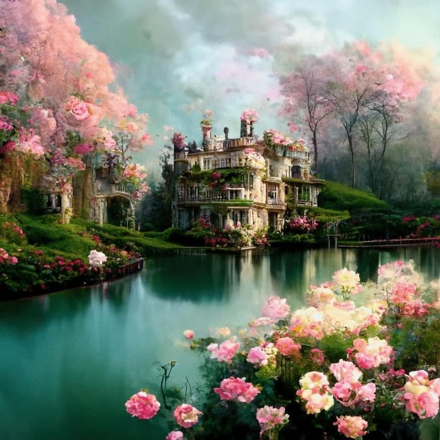
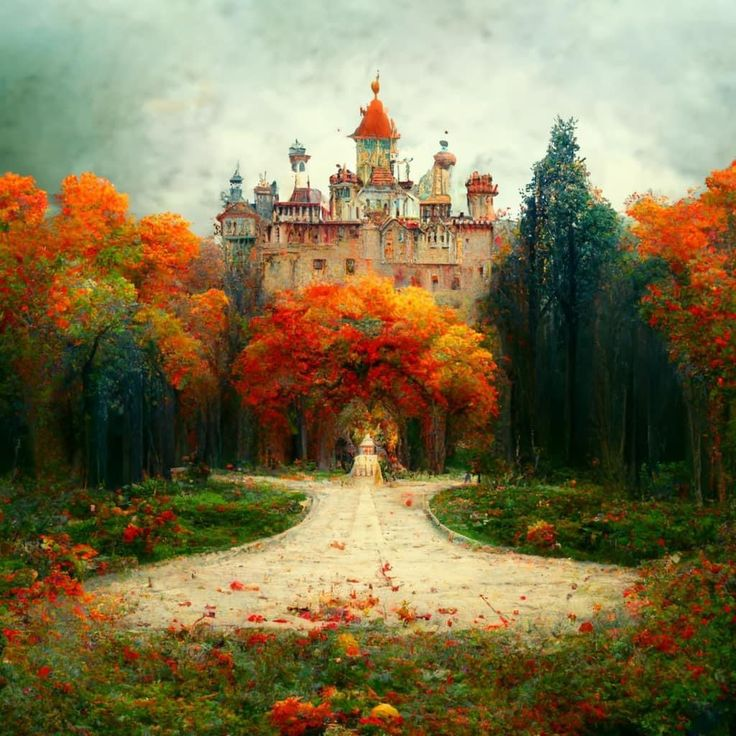
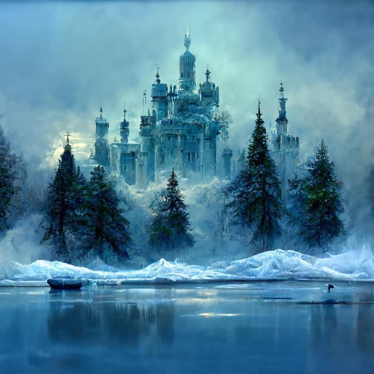
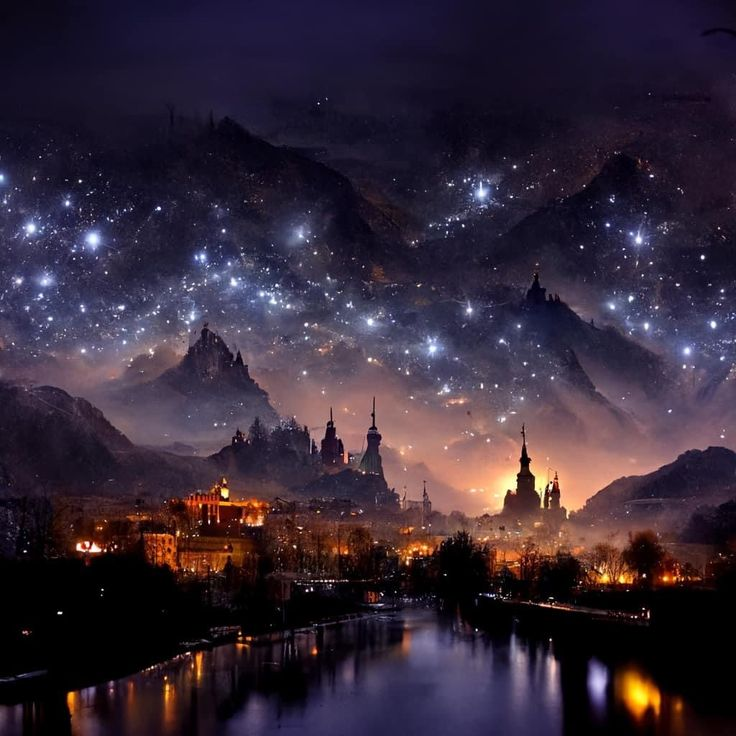
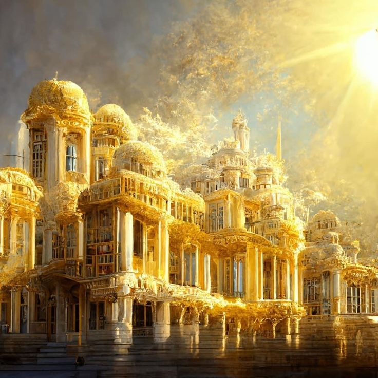
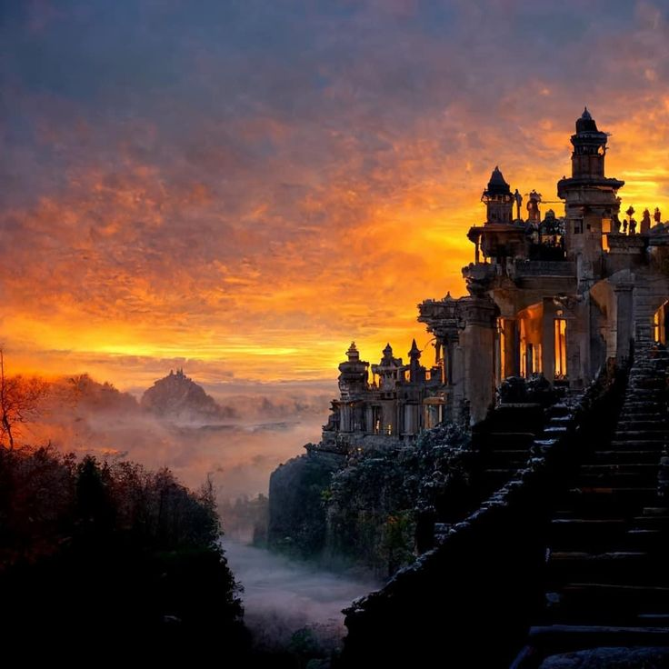

Corte Primavera
La Corte Primavera es conocida por sus bosques eternamente verdes, jardines florecidos y paisajes llenos de vida. Representa renovación, belleza y crecimiento.
Liderada por: Tamlin
Explorá las poderosas cortes del universo ACOTAR y a quienes las gobiernan.

La Corte Primavera es conocida por sus bosques eternamente verdes, jardines florecidos y paisajes llenos de vida. Representa renovación, belleza y crecimiento.
Liderada por: Tamlin
La Corte Verano se caracteriza por sus aguas cristalinas, arquitectura brillante y un fuerte vínculo con el océano. Es una corte cálida, orgullosa y elegante.
Liderada por: Tarquin

La Corte Otoño está cubierta de hojas rojizas y bosques ardientes. Es una corte poderosa, rígida y marcada por conflictos familiares y ambición política.
Liderada por: Beron

La Corte Invierno está dominada por paisajes congelados, montañas nevadas y lagos helados. Sus habitantes son conocidos por su lealtad y fortaleza.
Liderada por: Kallias

La Corte Noche alberga la ciudad de Velaris y es una de las cortes más poderosas de Prythian. Combina oscuridad, estrellas, magia y libertad.
Liderada por: Rhysand

La Corte Día es famosa por sus bibliotecas, sabiduría y magia relacionada con la luz y el conocimiento. Sus ciudades destacan por su arquitectura dorada.
Liderada por: Helion

La Corte Amanecer representa la calma, la curación y el conocimiento. Sus territorios están bañados por luces suaves y cielos claros.
Liderada por: Thesan